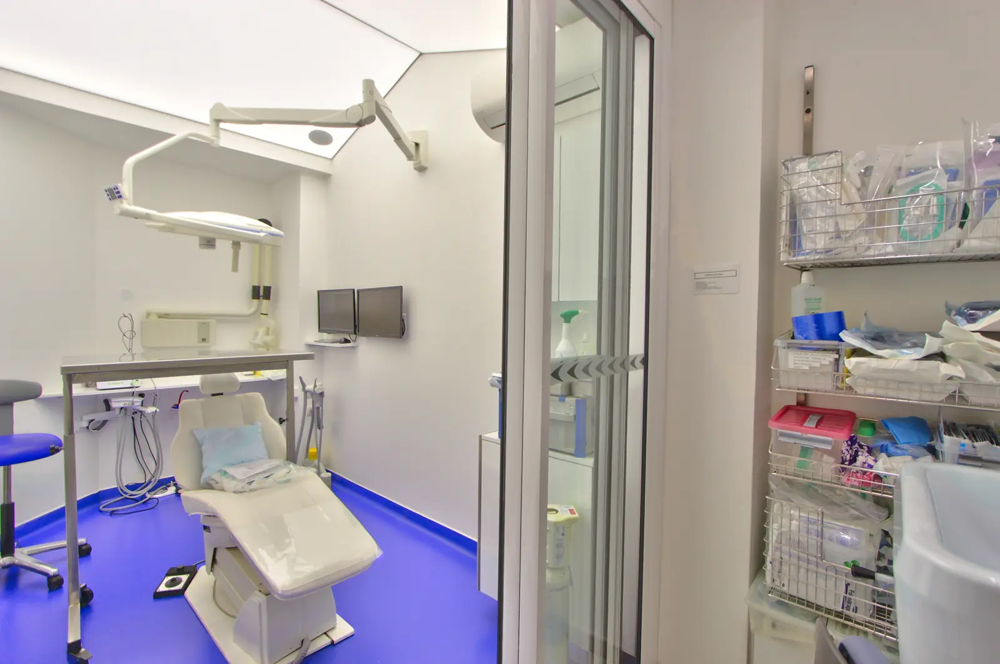
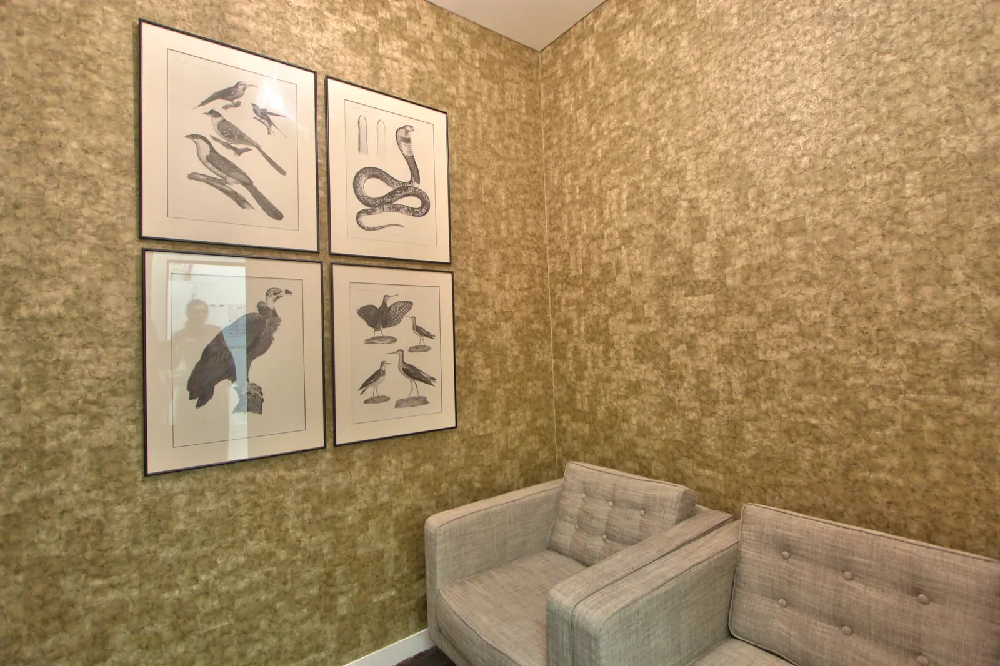

Une salle dédiée
Les interventions chirurgicales ont lieu dans une salle réservée à cet usage, séparée des salles où se déroulent les soins courants.

Les interventions
Par exemple :
L’asepsie
Avant chaque intervention, la salle est préparée selon un protocole strict : surfaces désinfectées, instruments stériles, champs stériles. L’équipe porte une tenue adaptée à la chirurgie.
Avant de repartir
Après l’intervention, vous pouvez vous reposer dans la salle de repos du cabinet avant de rentrer chez vous.
